This guide provides the steps required to configure Provisioning for Workday and includes the following topics:
Okta can import users and groups from Workday through its standard API. Okta supports two typical scenarios: Import from Workday and Workday-driven IT provisioning, as described below:
In the first configuration, Import from Workday Okta simply imports users and groups from Workday like any other application. Imported Workday users are used to create Okta users, and imported Workday groups can be used to assign apps. However, once the Workday users are imported into Okta, they are no longer managed by Workday. Any updates to the user made in Workday will not change the associated Okta user.
In the second configuration, Workday-driven IT Provisioning Okta integrates with Workday to drive IT provisioning. When the Workday user is imported into Okta, they continue to be managed by Workday. Updates and terminations made in Workday are reflected in Okta and downstream apps. This arrangement enables Workday to manage employee and contractor access to apps. Workday-driven IT provisioning is a superset of the functionality provided in Import from Workday, so the rest of this document focuses on configuring Workday-driven IT provisioning, but is relevant to Import from Workday scenarios as well.
Note: Workday-driven IT Provisioning requires the Enterprise or Enterprise Plus versions of Okta to enable Workday as a Profile Master and for flexible attribute mappings.
With Workday-driven IT provisioning, Okta supports the following worker lifecycle events:
New hire
A new Worker is hired in Workday
Okta imports the new Worker and creates an Okta user profile
Okta creates accounts in downstream apps (AD included)
Updates
A Workday user’s attribute is changed in Workday
Okta imports the attribute change
Okta updates the attribute in downstream apps (AD included)
Termination
A Worker is terminated in Workday
Okta imports the status change
Okta deactivates the Okta user and accounts in downstream apps (AD included)
Rehire
A terminated Worker is rehired in Workday
The deactivated Okta user needs to be manually reactivated in Okta
Okta imports and relinks the rehired Worker with the reactivated Okta user
Before configuring provisioning in Okta, you need to do the following:
Okta accesses the Workday APIs with a special type of Workday user known as an integration system user. To create one, type create integration system user in the Search bar and select the resulting task. Follow the directions to create a username and password.
Now you need to grant this integration system user permission to access the Web services needed for the Okta Workday integration through Workday Security Groups.
To create a new Security Group, type create security group in the Search bar.
Click on the Create Security Group search result.
Select Integration System Security Group (Unconstrained) from the In the Type of Tenanted Security Group dropdown menu, as shown below:

Create a name for the group.
On the next screen, under Integration System Users, add your integration system user to the list. To come back to this group for future edits, simply type in the security group name in the Search bar.
Ensure that the group you created has proper access to a set of business domains (listed below) needed for Okta integration.
Repeat steps a–e (below) for the following domains:
“External Account Provisioning” – Get and Put
“Worker Data: Public Worker Reports” – Get and Put
“Worker Data: Work Contact Information” – Get and Put
“Worker Data: Current Staffing Information” – Get
“Worker Data: All Positions” – Get
“Worker Data: Business Title on Worker Profile” – Get
Type Domain Security Configuration in the Search bar.
Select the resulting report.
In the new search field, type the domain name in the Domain field, then click OK.

On the subsequent page, click the ellipsis after the domain name to reveal a dropdown menu. Select Domain > Edit Security Policy Permissions.

Add the security group you created earlier to the appropriate section under Integrated Permissions based on the above domain list. For example, Get and Put vs Get ).

Workday might alert you to activate the security policy changes.

If you do not activate, the integration user account will not have the necessary permissions.
To activate, do the following:
Type Activate Pending Security Policy Changes in the Search bar.
Select the resulting task.
Enter a comment (required), then click OK to activate.

Check the confirm checkbox verifying the changes that needs to be activated.

To set up the API integration, go to the Okta Provisioning tab in your Workday instance:
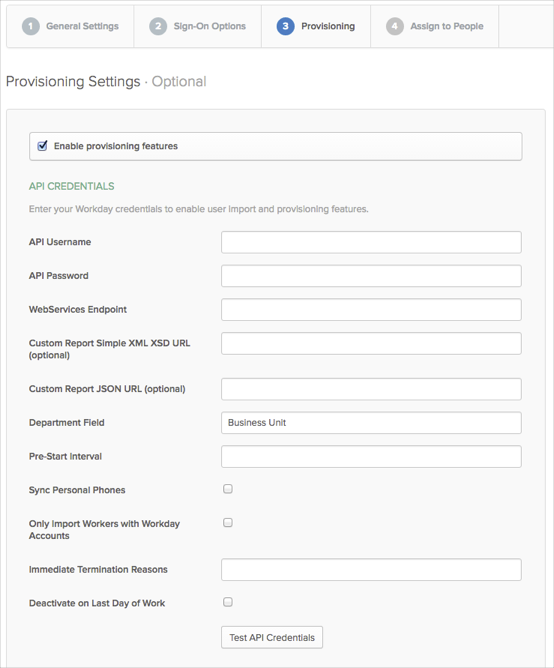
Check the Enable provisioning features box, then enter the following:
Note: The first three fields are required, the rest are optional.
API Username: The API username format is: [integration system user name]@[tenant]. For example: wd_integration@oktademo.
API Password: The password for the integration system user which is used above.
WebServices Endpoint: The tenant name can be found in your Workday URL. To obtain the Web services endpoint, simply look up the WSDL of any of the Web services in your org, as follows:
Type public web services in the Search bar.
Under Reports, select Public Web Services.
From the Public Web Services list, select any one of them and click the ellipsis (…) to reveal a drop-down menu. Select Web Service > View WSDL, which displays the full WSDL in a separate window.

In the WSDL, search for soapbind:address to see the Web services endpoint corresponding to the Web service that you chose.
For the Okta configuration you only need the URL up to the tenant name. For example, if the value in the WSDL is https://implcc.workday.com/ccx/service/okta_pt1/Human_Resources/v19, you only need to enter: https://impl-cc.workday.com/ccx/service/okta_pt1.
Custom Report Simple XML XSD URL (optional): See Workday Custom Attributes.
Custom Report JSON URL (optional): See Workday Custom Attributes.
Department Field: The Department Field determines which worker attribute is used for the department attribute of the user in Okta. By default, the value is Business Unit.
Pre-Start Interval: The Pre-Start Interval determines how many days before the hire-date you should have the user imported and activated in Okta. For more information, see Pre-Start Interval details.
Sync Personal Phones: This option allows Okta to use personal phone numbers accessed from Workday if work phone numbers are otherwise unavailable.
Only Import Workers with Workday: This option allows you to import only Workday workers who have Workday accounts and automatically filter out workers who don't. By clicking this button, your next import will only include valid Workday workers.
Immediate Termination Reasons: If using the Real Time Sync feature, use this text box to match the Termination_Subcategory_ID for each termination reason, as identified in the Workday Integration IDs. This field must be a Regex expression. See Using Real Time Sync for further details.
Deactivate on Last Day of Work: This option allows users to be deactivated based on the last day of work instead of termination date. User deactivation will happen when their Last Day of Work:
Matches the current date, and
Does not precede Termination Date by more than the number of days specified in Pre-Start Interval.
Scroll down and enable any Provisioning features you require:
The User Import provisioning feature is automatically enabled when provisioning is enabled, just edit the other settings for this feature as required.
For the Workday-driven IT Provisioning scenario, Okta recommends setting up scheduled import and automatic confirmation so that worker life cycle events in Workday are periodically propagated to Okta without the need for manual intervention. Note that imports can take time to complete if there are a large number of Workers in Workday, so it’s not advisable to schedule imports too frequently.
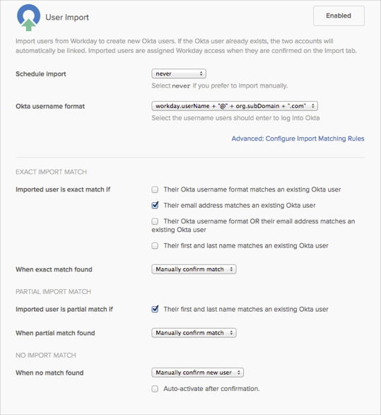
We recommend that you first import your users manually, and based on the results of that import, you can schedule your imports accordingly; that is, if your import takes a long time, you may need to adjust your import schedule.
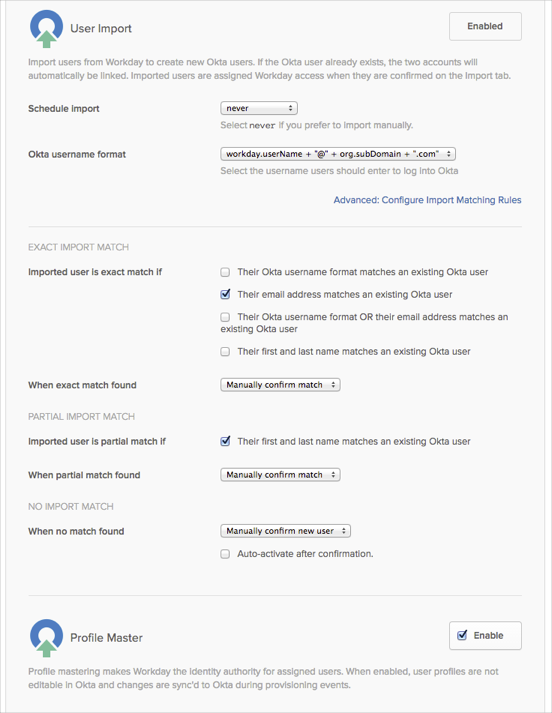
Workday as a Profile Master should also be enabled in the Workday-driven IT provisioning scenario so that Workday manages the Okta users. Furthermore, Workday should be listed as the highest priority Profile Master, specifically above the Active Directory (AD) instance to which it will create users.
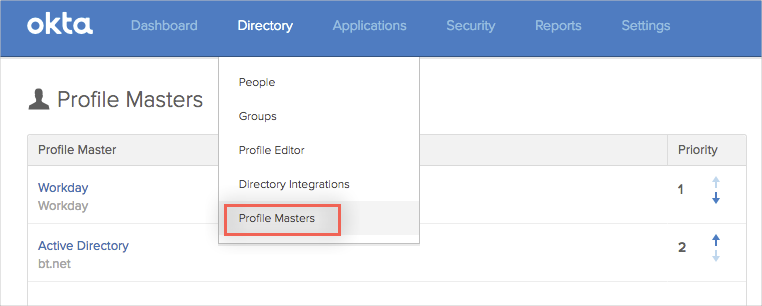
The PreStart Interval is an optional field for early provisioning of Workday users. It allows you to onboard a user account into Okta prior to the official Worker/Employee Date (this is the employee’s actual start date). The interval represents the number of days prior to a Workday user’s stated Worker/Employee Date that Okta will evaluate a Workday user for early import. If the feature is enabled, Okta evaluates the Workday PreHire Date; then if it falls within the set interval, Okta imports the user.
For example, if you set the PreStart Interval in Okta to 7 days, and a given Workday account has its PreHire Date configured to 7 days prior to their Worker/Employee Date, Okta imports the account. In this same scenario, if the PreHire Date is greater than the 7 day interval configured in Okta, Okta does not consider it for import until the beginning of the window defined by the PreStart Interval.
Note the following:
You must have Profile Mastering enabled to use the PreStart Interval option.
A best practice is to configure the interval to encompass the largest amount of time likely to be required before the PreHire Date (i.e., the greatest amount of time needed for onboarding).
The interval doesn’t define when a user will be imported; it specifies when they’re eligible to be imported if they have a PreHire Date.
Workday Provisioning Groups can be used to import workers into Okta in an organized way. Like Active Directory Security Groups, imported Workday Provisioning Groups can be seen under the People > Group tab. These groups can be used like any other Okta group: for app assignments, multifactor authentication (MFA) policy assignments, etc. The groups can also be used to drive provisioning into Active Directory and other applications. Provisioning groups must be created manually inside Workday. Once created, the groups and associated memberships become part of the import into Okta.
Before a Workday admin can manage Provisioning Groups, you must ensure they have the correct privileges. If you have typed provisioning groups in the Search bar and do not see the options to Create Provisioning Groups, Delete Provisioning Groups,or Edit Provisioning Groups, this indicates that the admin does not have the required privileges.
To add Provisioning Group access:
Type domain security in the Search bar and select Domain Security Policies for Functional Area.
Type System, then click OK.
On the next screen, in the left pane, scroll down and expand the Security Administration folder. Then click Provisioning Group Administration.
Next to Provisioning Group Administration in the right pane, click the ellipsis to reveal a dropdown menu and select Domain Security Policy. If the second item says Enable, it means the policy is currently disabled. To enable it, click Enable. There will be a confirmation box following the selection. If the second item says Disable, it means the policy is currently enabled. Move to the next step.

Under the Report/Task Permissions list, ensure that the admin is a member of one of the Security Groups with view and modify permissions. If not, click the dropdown menu next to Domain Security Policy and select Domain Security Policy > Edit Permissions to add the right Security Group to the list. Be sure to add it to the list with both view and modify permissions.
Workday workers can be manually assigned to provisioning groups within Workday; however, provisioning groups are most effective when configured to have automated assignments based on conditional rules—defined in a business process within Workday. Because it involves modifying a business process inside Workday, a Workday HR administrator would probably perform this step.
Okta can automate the creation, update, and deactivation of users from Workday to Active Directory (AD). Okta drives provisioning via Workday provisioning groups. In short, a Workday provisioning group is tied to one (or more) AD organization unit (OU) within Okta. When a user is created in Workday and assigned to a properly configured provisioning group, Okta imports that user from Workday and creates a user in AD under the corresponding OU.
To provision users to AD via provisioning groups:
Log into Okta.
Find the desired Workday provisioning group under People > Groups.
Click on the group.
Click Manage Directories.

Select an AD domain(s) to associate with the Workday provisioning group.

Select the AD OU within which you wish to provision accounts.

Click Done.
In the Okta AD Settings tab, enable Provision new Active Directory accounts from Okta.
If an existing Worker is added to a different provisioning group in Workday, this will result in a membership change in the associated group in Okta. However, the OU location of the associated AD user does not change. This is because Okta only adds AD users to a particular OU during AD user creation, updates do not apply.
As shown in the Universal Directory (UD) Profile Editor, the base profile that Okta imports from Workday consists of 20 attributes. Some of these attributes are mapped to the Okta user profile by default, and others must be created for the Okta user first as custom attributes, then mapped manually. Figure 14 shows the recommended mappings from a Workday to Okta user for typical use cases, which includes all attributes in the Workday base profile except for Worker Type, Manager ID, and Manager Username.
Note: When Workday is configured to write to AD (and UD is enabled), the Okta admin must manually map some attributes between the Workday app user profile and the Okta user profile. Additionally, the admin must manually map some attributes between the Okta user profile and the AD user profile. This allows attributes to flow from Workday to Okta and then to AD.
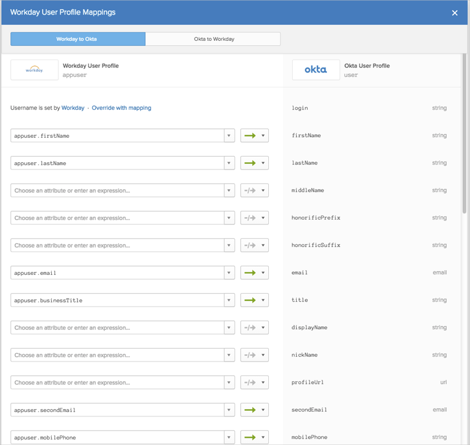
Workday as a Master typically involves creating AD users. Some of the attribute mappings from Okta user to AD user exist by default, but others need to be created manually. Figure 15 shows the recommended mappings for typical use cases.
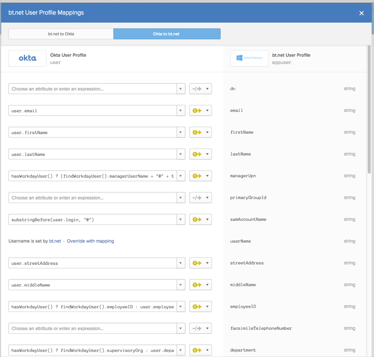
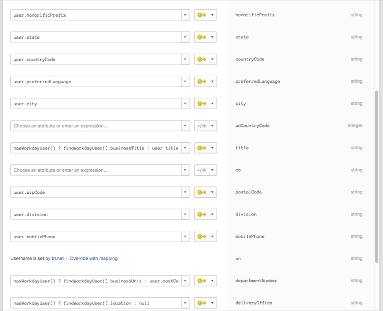
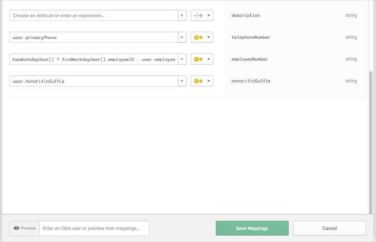
UD supports the use of custom expressions in profile mappings to transform attributes. As shown in the screen capture above, custom expressions are used to populate the SAM Account Name and Manager (UPN).
The Manager (UPN) attribute is important for linking managers in AD. The full custom expression for Manager (UPN) is as follows:
hasWorkdayUser()?(findWorkdayUser().managerUserName + "@" + target_app.namingContext):null
In plain English, the custom expression is doing the following: If Workday profile exists for this Okta user, then find the managerUserName attribute of the Workday profile was imported into Okta and append @[AD domain] to populate the Manager (UPN) attribute.
Okta uses the Manager (UPN) attribute to find the Active Directory user in AD that is this Okta user’s manager, and links the two AD users together. This custom expression can be modified to construct the Manager (UPN) attribute differently to suit special AD environments.
Two other situations can result in additional custom expressions appearing in the Provision to AD profile mappings. The first is when UD is turned on for a preexisting Workday as a Master deployment. The second is when the Workday integration is added to Okta first, before AD is added. In both cases, the Workday attributes of Business Title, Location, Supervisory Organization, Business Unit, and Employee ID are mapped directly to their corresponding AD attributes directly via custom expression.
Okta's Workday application has been enhanced to support UD, enabling Okta to import more than 20 attributes from Workday. To support this, Okta can import attributes from a separate Workday web services endpoint—a reports-as-a-service endpoint. In short, a customer creates a custom report in Workday and adds attributes to it. Workday exposes a web services endpoint for that custom report, and Okta imports the additional attributes. UD maps the incoming attributes to the Okta user profile and to downstream app user profiles.
Signing into Workday
Search for create custom report, then select the resulting task.
Complete the following fields:
Create a report name in the Report Name field.
Choose Advanced as the Report Type, this displays in the Web Service Enable checkbox.
Check the Web Service Enable checkbox.
Click OK.
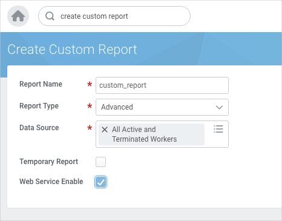
Add desired attributes to the custom report.
If you wish to change the imported attribute’s name, modify the Column Heading Override XML Alias column.
Add the Workday ID attribute to the custom report:
Change the Column Heading Override XML Alias to Workday_ID.
Without Workday_ID, Okta will not successfully import custom attributes.

After creating the new custom report, click on the ellipsis after the report name and go to Web Service > View Urls.
Get the following URLs by right-clicking on the link and selecting Copy URL:
XSD (under Simple XML heading)
JSON (under JSON heading)
Share the custom report with your integration user:
Search for Edit Custom Report.
Find your custom report.
Select the Share Tab > Share with specific authorized groups and users.
Select your integration user.
Note: Not necessary if the Org is less than 5000 users.
When there are more than 5000 users, imports from Workday that involve custom reports can sometimes timeout. The solution is to create a paginated custom report, which allows Okta to import chunks of Worker data without timing out. To use this option, do the following:
Under the Filter tab, set up your filter as shown below:

Under the Prompts tab, specify the prompt default values as shown below:
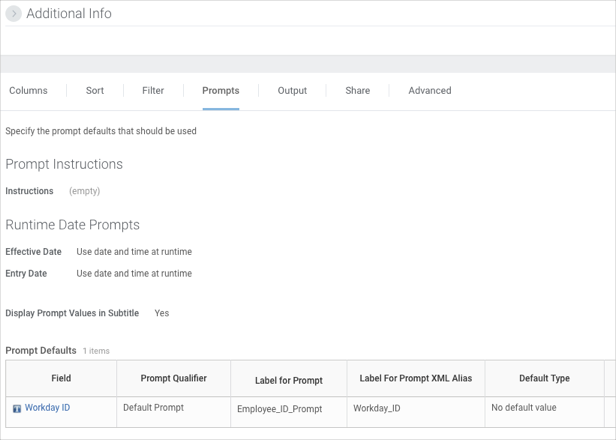
Find the Workday ID for all admins in Workday.
View the generated URLs by clicking Actions > Web Service > View URLs, as shown below:

In the Employee_ID_Prompt field enter the admin's Workday ID.
Note: Do not deprovision or remove an active admin. If this happens, you'll need to regenerate the URLs by entering a new admin's Workday ID.
Obtain the newly paginated URLs by right-clicking on the link and selecting Copy URL:
XSD (under the Simple XML heading)
JSON (under the JSON heading)

Generate the reports as before, adding the new URLs.
In Okta, navigate to the Workday app, then select the Provisioning tab.
Paste the URL from step 6a (above) into the Custom Report Simple XML XSD URL field (optional). Okta uses the XSD URL to get the custom report’s schema.
Paste the URL from step 6b (above) into the Custom Report JSON URL field (optional). Okta uses the XSD URL to get the custom report’s data.
Okta can now import any attribute from Workday via the custom report web services endpoint. Final steps include extending the Workday app user profile, the Okta app user profile, and optionally the AD user profile with the new attributes, and mapping attributes between profiles and applying transformations, if required.
See About Universal Directory for instructions.
Okta does not display Arabic characters imported from Workday correctly.
Removing a custom attribute in Workday, then importing into Okta, does not erase the custom attribute value that was previously imported.
The Realtime sync (RTS) feature updates user profiles, groups, and group memberships during signin instead of waiting for a scheduled import. You do not have to import all the users in your directory beforehand. Realtime sync also updates user information whenever you load or refresh a user's People page.
For details on setting up and using RTS in Workday, see the Workday Real Time Sync Setup Guide.
We have added the ability to write back email and phone number attributes to Workday.
Previously, Okta could not update Workday Attributes. With this new writeback feature, we allow Okta, as well as Active Directory, or any other Profile Master to update Phone Number and Email Workday attributes. Note that no other Workday attributes are supported at this time.
To enable Workday writeback for email and phone number. Enable the following feature flags.
Contact Okta Support for assistance.
Set up a Workday tenant, as described in the Workday Deployment Guide.
In Okta, open the Workday app, and navigate to the Provisioning tab:

Scroll down and select Enable for Update User Attributes:
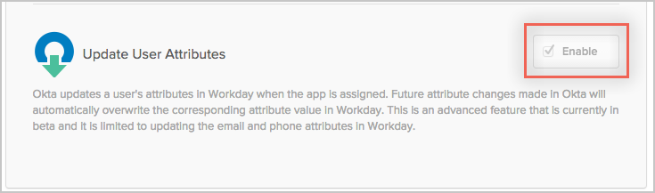
Under Profile Attribute and Mappings click Edit Attributes:

We need to now add those Workday attributes that are currently supported for writeback. This is done by discovering attributes from workday and mapping to relevant Okta attributes. Click Add Attribute:

Click Refresh Attributes:

Add the required Workday attributes, then click Save:
Note that each attribute has three different data types which are explained below. In this table, we are using the attribute Work Email as an example:
| Attribute Name | Type | Description | Required/Optional | Comments | Sample Values |
|---|---|---|---|---|---|
| Work Email | String | workEmail | Required | Map to Okta user attribute | OktaCustomWorkEmail |
| Set Work Email As Primary | Boolean | setWorkEmailAsPrimary | Optional | If Work email that is pushed needs to be set as Primary, set value as true. Default is true. | true |
| Set Work Email As Public | Boolean | setWorkEmailAsPublic | Optional | If Work email that is pushed needs to be set as Public, Set value as true. Default is true. | false |
Workday Contact information has 2 parameters: Primary and Public:
Primary: This parameter defines if the contact information is of type Primary or Additional.
Public: This parameter defines if the contact information visibility is Public or Private.

See Appendix A at the end of this article for a list of the Workday attributes that are currently supported.
Map the newly added attribute(s) to relevant Okta attribute(s). Click Map Attributes

Make sure you select Okta to Workday, then map attributes:

Example Expression Language Function
Note: See http://developer.okta.com/docs/api/getting_started/okta_expression_lang.html#string-functions for reference.
To parse phone numbers:
For user.mobilePhone = +1 (415) 123-4567 x 12345
Work Mobile Phone AreaCode: String.substringBefore(String.substringAfter(user.mobilePhone, "(" ), ")" ) -> 415
Work Mobile Phone InternationalPhoneCode: String.removeSpaces(String.substringBefore(String.substringAfter(user.mobilePhone, "+" ), "(" )) -> 1
Work Mobile Phone PhoneNumber: String.removeSpaces(String.substringBefore(String.substringAfter(user.mobilePhone, ")" ), "x" )) --> 123-4567
Work Mobile Phone PhoneExtension: String.removeSpaces(String.substringAfter(user.mobilePhone, "x")) -> 12345
Attribute-Level Mastering
In the typical Workday write-back use case, Workday is set as the overall Profile Master. However, to have email and/or phone number written back into Workday, you need to configure attribute-level mastering with Okta, Active Directory, or some other app as Profile Master for those specific attributes. See the following example:
From the Okta Admin Home page, navigate to Directory > Profile Editor.

Under Master Priority we can set any available Profile master to be the source of truth. In this example we will set it to Active directory since we are pushing from AD to OKTA to Workday.

This completes the setup for Workday Write Back. Now we can successfully push email and phone attributes to Workday.
Unlike the Workday UI, the Workday API does not have format validation/rules for phone number or email (for example: Phone number format must be 3 Digits + Optional dash (or dot) + 4 digits).
Once Okta sets the Primary Workday attributes, it will not be able to set it back to NULL. This is because a Workday validation rule does not allow NULL values.
| S. No | Attribute Name | Type | Description |
|---|---|---|---|
| 1 | Home Email | string | homeEmail |
| 2 | Home Fax Phone AreaCode | string | homeFaxPhoneAreaCode |
| 3 | Home Fax Phone / InternationalPhoneCode | string | homeFaxPhoneInternationalPhoneCode |
| 4 | Home Fax Phone PhoneExtension | string | homeFaxPhonePhoneExtension |
| 5 | Home Fax Phone PhoneNumber | string | homeFaxPhonePhoneNumber |
| 6 | Home Mobile Phone AreaCode | string | homeMobilePhoneAreaCode |
| 7 | Home Mobile Phone / InternationalPhoneCode | string | homeMobilePhoneInternationalPhoneCode |
| 8 | Home Mobile Phone PhoneExtension | string | homeMobilePhonePhoneExtension |
| 9 | Home Mobile Phone PhoneNumber | string | homeMobilePhonePhoneNumber |
| 10 | Home Pager Phone AreaCode | string | homePagerPhoneAreaCode |
| 11 | Home Pager Phone / InternationalPhoneCode | string | homePagerPhoneInternationalPhoneCode |
| 12 | Home Pager Phone PhoneExtension | string | homePagerPhonePhoneExtension |
| 13 | Home Pager Phone PhoneNumber | string | homePagerPhonePhoneNumber |
| 14 | Home Telephone Phone AreaCode | string | homeTelephonePhoneAreaCode |
| 15 | Home Telephone Phone / InternationalPhoneCode | string | homeTelephonePhoneInternationalPhoneCode |
| 16 | Home Telephone Phone / PhoneExtension | string | homeTelephonePhonePhoneExtension |
| 17 | Home Telephone Phone PhoneNumber | string | homeTelephonePhonePhoneNumber |
| 18 | Set Home Email As Primary | Boolean | setHomeEmailAsPrimary |
| 19 | Set Home Email As Public | Boolean | setHomeEmailAsPublic |
| 20 | Set Home Fax Phone As Primary | Boolean | setHomeFaxPhoneAsPrimary |
| 21 | Set Home Fax Phone As Public | Boolean | setHomeFaxPhoneAsPublic |
| 22 | Set Home Mobile Phone As Primary | Boolean | setHomeMobilePhoneAsPrimary |
| 23 | Set Home Mobile Phone As Public | Boolean | setHomeMobilePhoneAsPublic |
| 24 | Set Home Pager Phone As Primary | Boolean | setHomePagerPhoneAsPrimary |
| 25 | Set Home Pager Phone As Public | Boolean | setHomePagerPhoneAsPublic |
| 26 | Set Home Telephone Phone As Primary | Boolean | setHomeTelephonePhoneAsPrimary |
| 27 | Set Home Telephone Phone As Public | Boolean | setHomeTelephonePhoneAsPublic |
| 28 | Set Work Email As Primary | Boolean | setWorkEmailAsPrimary |
| 29 | Set Work Email As Public | Boolean | setWorkEmailAsPublic |
| 30 | Set Work Fax Phone As Primary | Boolean | setWorkFaxPhoneAsPrimary |
| 31 | Set Work Fax Phone As Public | Boolean | setWorkFaxPhoneAsPublic |
| 32 | Set Work Mobile Phone As Primary | Boolean | setWorkMobilePhoneAsPrimary |
| 33 | Set Work Mobile Phone As Public | Boolean | setWorkMobilePhoneAsPublic |
| 34 | Set Work Pager Phone As Primary | Boolean | setWorkPagerPhoneAsPrimary |
| 35 | Set Work Pager Phone As Public | Boolean | setWorkPagerPhoneAsPublic |
| 36 | Set Work Telephone Phone As Primary | Boolean | setWorkTelephonePhoneAsPrimary |
| 37 | Set Work Telephone Phone As Public | Boolean | setWorkTelephonePhoneAsPublic |
| 38 | Work Email | string | workEmail |
| 39 | Work Fax Phone AreaCode | string | workFaxPhoneAreaCode |
| 40 | Work Fax Phone / InternationalPhoneCode | string | workFaxPhoneInternationalPhoneCode |
| 41 | Work Fax Phone PhoneExtension | string | workFaxPhonePhoneExtension |
| 42 | Work Fax Phone PhoneNumber | string | workFaxPhonePhoneNumber |
| 43 | Work Mobile Phone AreaCode | string | workMobilePhoneAreaCode |
| 44 | Work Mobile Phone / InternationalPhoneCode | string | workMobilePhoneInternationalPhoneCode |
| 45 | Work Mobile Phone PhoneExtension | string | workMobilePhonePhoneExtension |
| 46 | Work Mobile Phone PhoneNumber | string | workMobilePhonePhoneNumber |
| 47 | Work Pager Phone AreaCode | string | workPagerPhoneAreaCode |
| 48 | Work Pager Phone / InternationalPhoneCode | string | workPagerPhoneInternationalPhoneCode |
| 49 | Work Pager Phone PhoneExtension | string | workPagerPhonePhoneExtension |
| 50 | Work Pager Phone PhoneNumber | string | workPagerPhonePhoneNumber |
| 51 | Work Telephone Phone AreaCode | string | workTelephonePhoneAreaCode |
| 52 | Work Telephone Phone / InternationalPhoneCode | string | workTelephonePhoneInternationalPhoneCode |
| 53 | Work Telephone Phone PhoneExtension | string | workTelephonePhonePhoneExtension |
| 54 | Work Telephone Phone PhoneNumber | string | workTelephonePhonePhoneNumber |